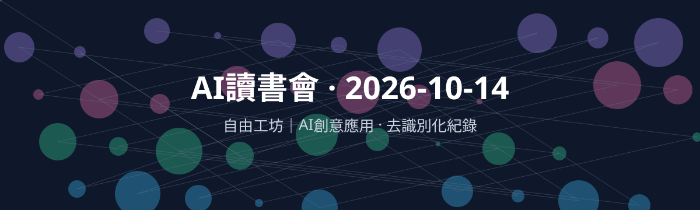
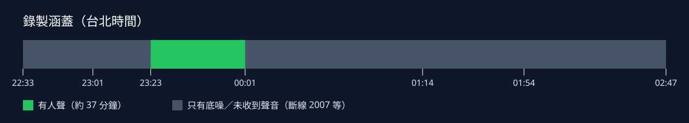
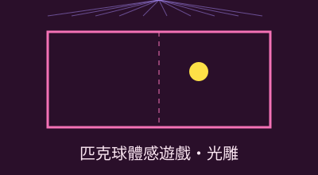
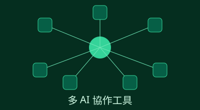
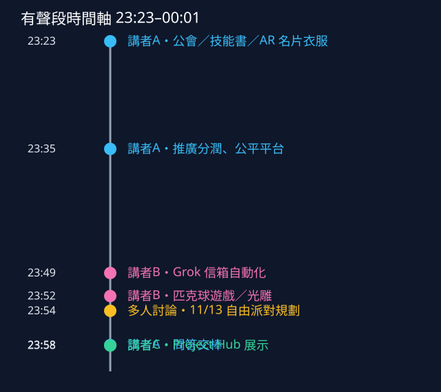

自由工坊｜AI創意應用 AI讀書會（2026-10-14）
Discord 社群「自由工坊｜AI創意應用」🎙｜AMA 舞台的線上讀書會紀錄。本站為去識別化版本：所有發言者以「講者A／B／C」代稱，逐字稿中提到的其他人名一律改為「[某成員]」，未收錄頭像、帳號、QR Code 與聯絡方式。逐字稿內容除此之外未改動。
錄製範圍與缺漏（請先看）

- 錄製時段：台北時間 2026-10-14 22:33:26 至 10-15 02:47。
- 實際收到人聲的只有 23:23:48–00:01:03（約 37 分鐘），整段錄影已用語音偵測從頭掃過確認。
- 22:33–23:23 只有底噪；Discord 畫面出現「連線已中斷，錯誤碼 2007」，重連後才收到舞台聲音。
- 00:01 之後到活動結束（約 2 小時 45 分）沒有收到聲音（斷線重連後未回到舞台音訊），內容無法補回。本站只涵蓋有聲的 37 分鐘。
- 完整未剪輯錄影與有聲段剪輯都放在下方。
完整錄影（22:33–02:47，未剪輯）
下載完整錄影 MP4（約 937MB）・影片 0:00 ＝ 台北時間 22:33:26；有人聲只在 VT 0:50:23–1:27:37。
有聲段（23:23–00:02）
下載有聲段（約 48MB）・影片 00:00 ＝ 台北時間 23:23:00。
完整重建報告
一句話總結
講者A介紹社群自建的「公會」平台（公會、技能書、作品推廣分潤、AR 名片衣服、世界聊天）；講者B分享用 Grok 串十幾個信箱的自動化，以及台北高雄連線的匹克球遊戲與開源光雕軟體，大家暫定 11/13（五）在公館（台大旁）辦第二場線下「自由派對」；最後講者C展示自製的多 AI 協作工具 Project Hub（v4.114）。
核心重點
公會平台
- 「一個人單打獨鬥，一定輸給一群人一起做」，平台用來整合成員、避免重複造輪子。
- 可直接申請建立公會；目前 25 個公會，可加入多個，有專屬聊天室、群組與小隊。
- 推廣分潤：供應商覺得被大型通路壓榨，改由成員推薦分享、賣出即分潤。
- 主張公平、公開，好作品「一定會被看見」、「不會被關小黑屋」。
- AR 名片衣服：用平台 AR 相機掃衣服圖案，跳出特效、3D 模型或個人名片；網站功能免費。

匹克球體感遊戲／光雕
- 台北高雄連線的數位匹克球遊戲：手遊版；線下版直接拿手機當球拍。
- 在高雄參展，當天最高 3,900 分，超過 4,000 分送小禮物；遊戲「不到半天」做出來。
- 下一步：連線對戰、聯誼功能，並結合光雕投影到建築物上。
- 自製免費、開源的光雕投影軟體快完成，打算放上公會並在線下開教學。
自由派對（第二場）
- 上次線下聚會在 8 月，已隔兩個月。
- 避開 11/7 考試等因素，暫定 11/13（星期五），地點公館、台大旁邊，有捷運（場館名待確認）。
- 規劃：預訂講者、匹克球大賽、光雕投影區，也有人提議萬聖節主題。
- 可能 10/30 辦「高雄台北雙城大戰」，仍在策劃。

多 AI 協作
- 講者B：用 Grok 每天早上整理十幾個信箱；做簡報、網站則覺得 Codex 或 Claude 較好。
- 講者C：Project Hub（PH）v4.114，多個 AI 在同一資料夾、同一視窗以專案為單位協作，PH 本身也用 PH 開發。
- Codex 與 Claude 交接免手動複製；額度用滿會自動切到另一個 AI；每個角色可指定模型。
- 「手動掃描」抓出已登入 CLI 的可用模型並自動配置；全部走 CLI、不用 API。
- FreeTalk 聊天內容可一鍵轉成專案。
時間軸（台北時間）

| 時間 | 講者 | 內容 |
|---|---|---|
| 23:23:48 | 講者A | 技能書都經過驗證（例：某公會專案 71 顆星） |
| 23:24:59 | 講者A | AR 衣服／AR 名片構想 |
| 23:28:31 | 講者A | 申請建立公會、25 個公會、世界聊天 |
| 23:31:12 | 講者A | 通路壓榨 → 推廣分潤 |
| 23:32:17 | 講者A | 公平、公正、公開的平台 |
| 23:34:23 | 講者A | 自製自動剪輯軟體：自寫底層引擎、GPU 渲染、開源 |
| 23:36:31 | 講者B | 用 Grok 串十幾個信箱自動整理 |
| 23:38:37 | 講者B | 台北高雄連線數位匹克球遊戲 |
| 23:39:54 | 講者B | 結合光雕投影的構想 |
| 23:40:47 | 多人 | 討論第二場線下聚會日期，暫定 11/13 |
| 23:46:10 | 講者B | 高雄參展成績、連線對戰規劃、10/30 雙城大戰 |
| 23:49:15 | 講者B | 免費開源光雕軟體 |
| 23:52:05 | 講者A | 問答、交棒 |
| 23:54:08 | 講者C | Project Hub v4.114 展示 |
| 23:56:20 | 講者C | AI 間自動交接、額度用滿自動切換 |
| 23:58:08 | 講者C | 模型手動掃描與自動配置 |
| 00:00:30 | 講者C | FreeTalk 一鍵轉專案（錄音於 00:01:03 後中斷） |
名詞與數字
- 公會：平台上的社群單位（語音辨識常寫成「工會」）。技能書：平台上分享的技能／教學。
- 匹克球：pickleball。光雕投影：projection mapping。Creative Coding：用程式做互動藝術或遊戲。
- Project Hub（PH）：社群成員自製的多 AI 協作工具。CLI：命令列工具。FreeTalk：PH 裡的自由聊天區。
- 數字（皆為講者自述、未查證）：25 個公會、71 顆星、1000 多億 token、最高 3,900 分／4,000 分有獎、v4.114、5 小時額度。
- 日期（講者自述、未查證）：上次聚會 8 月；10/30 可能辦雙城大戰；11/13（五）第二場自由派對（暫定）。
相關連結
時間格式：台北時間｜影片時間。「依名稱查得」表示直播中只提到名稱，網址為官方網站。
| 名稱 | 提及時間 | 說明 | 連結 |
|---|---|---|---|
| 自由工坊 平台（公會／技能書） | 23:23:48｜00:48 | 社群的公會、技能書與合作平台（依名稱查得官方網址） | https://freetwai.com/ |
| Grok | 23:36:31｜13:31 | xAI 的 AI 助理，講者B用於串接信箱每日整理（依名稱查得官方網址） | https://grok.com/ |
| ChatGPT | 23:36:31｜13:31 | OpenAI 的 AI 助理，講者B比較用（依名稱查得官方網址） | https://chatgpt.com/ |
| Codex | 23:36:31｜13:31；23:56:32｜33:32 | OpenAI 的程式開發代理（依名稱查得官方網址） | https://chatgpt.com/codex |
| Claude／Claude Code | 23:36:31｜13:31；23:57:24｜34:24 | Anthropic 的 AI 助理與程式開發代理（依名稱查得官方網址） | https://claude.com/product/claude-code |
| Gemini | 23:57:24｜34:24 | Google 的 AI 模型，Project Hub 的備援生圖模型（依名稱查得官方網址） | https://gemini.google.com/ |
| Tailscale | 約 00:50（有聲段之外，畫面分享） | 建立私人網路、遠端連線裝置的工具（直播畫面顯示） | https://tailscale.com/ |
提到但沒有公開網址：
- Project Hub（23:54:08｜31:08）：社群成員自製的多 AI 協作工具，未公開網址。
- 數位匹克球遊戲（23:37:28｜14:28）：台北－高雄連線體感遊戲，以 QR 圖分享，未列出。
- 開源光雕投影軟體（23:48:50｜25:50）：講者表示將放上公會平台供下載，尚未公開。
- 自由派對 第二場報名網站（23:49:50｜26:50）：暫定 11/13（五），報名網站尚未建立。
- 10/30 雙城大戰（23:47:28｜24:28）：台北－高雄匹克球對戰，策劃中，無網址。
可行動事項
- 想參加線下活動：留意 11/13（五）公館「自由派對」的報名網站，以及 10/30 雙城大戰消息。
- 想推廣作品：可看看平台的作品推廣與公會功能（目前僅有講者說法）。
- 想做多 AI 分工：參考 Project Hub 與 Grok 信箱自動化的做法。
- 對光雕或匹克球遊戲有興趣：可在社群內與該分享者討論。
本頁由語音辨識逐字稿整理而成，可能有辨識錯誤；講者代號依點名與畫面推定。插圖皆為程式產生的抽象圖，不描繪真實人物。